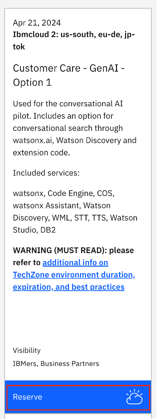
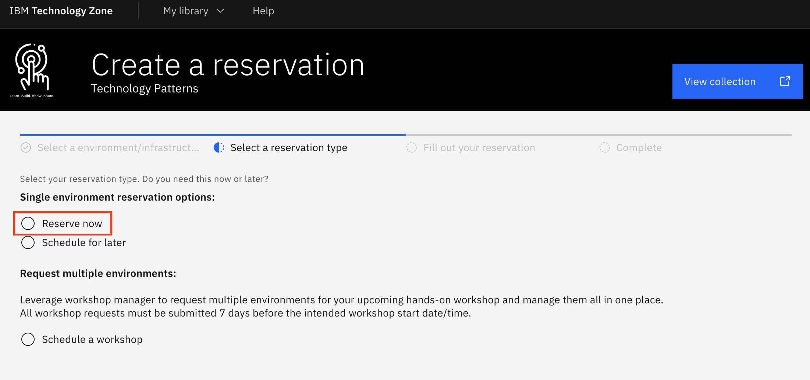
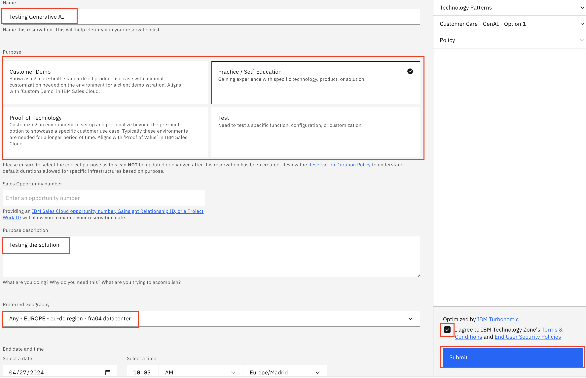
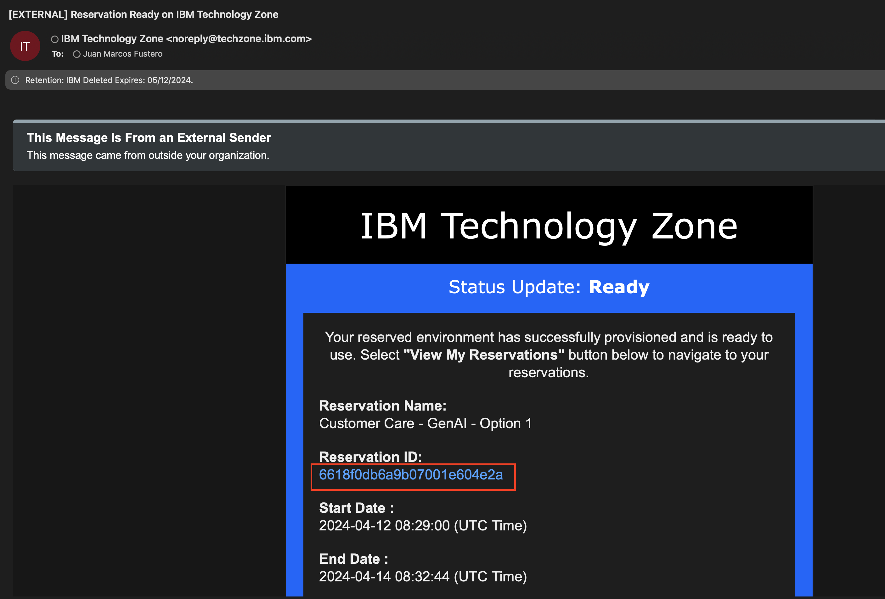
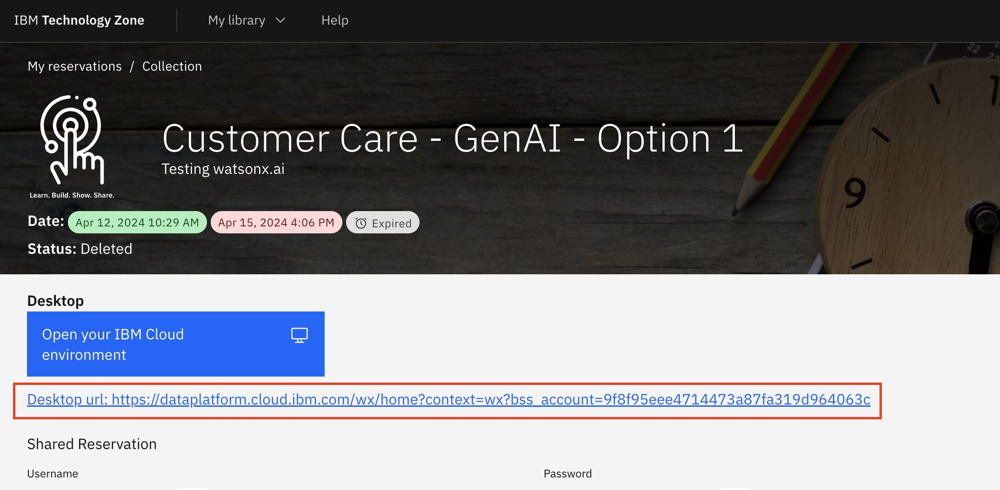
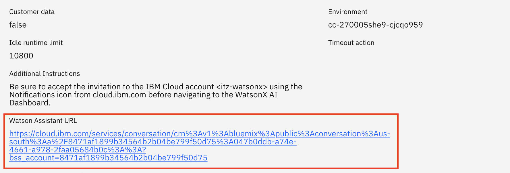
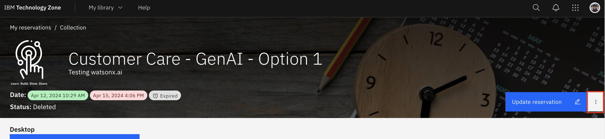
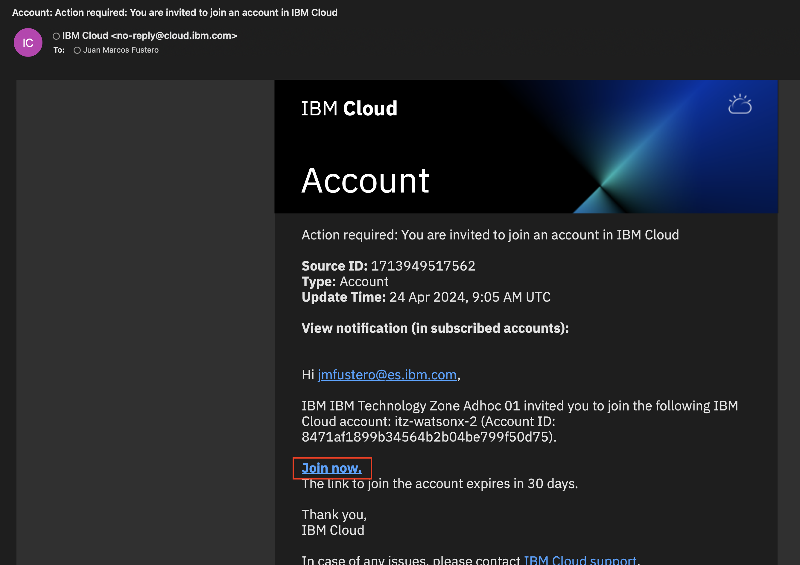

Requesting an environment
IMPORTANT
If you're an IBM employee or an IBM Business Partner, follow the steps below.
If you're an IBM client, contact your IBM representative to request an environment.
-
Go to the following Techzone collection. Log in using your IBM ID.
https://techzone.ibm.com/collection/technology-patterns/journey-ai-assistants
Note
If you're an IBM Business Partner, your IBM ID must be linked to a Business Partner account.
-
Click the Reserve button in the environment Customer Care - GenAI - Option 1 to request access:

-
Click Reserve now.

-
Select the Name of your reservation. Then indicate the purpose and a description. Finally, select your preferred geography, agree to the terms, and click Submit.

-
After 15-30 minutes, you should receive an e-mail confirming that the environment is ready like this one. Click the Reservation ID to go to your reservation details.

-
This page contains the link to the watsonx homepage. You can scroll down to see the link to watsonx Assistant.


-
Note that you can extend your reservation and get support by clicking the reservation menu:

IMPORTANT
If it's your first time in the assigned IBM Cloud Account, you will also receive an e-mail asking you to join the IBM Cloud Account. In that case, click Join now to do so:
